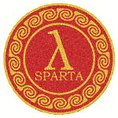

SPARTA Direct Simulation Monte Carlo (DSMC) Simulator
The generation of random numbers is too important to be left to
chance. -- Robert Coveyou
God does not play dice. -- Albert Einstein

hover to animate
SPARTA is an acronym for Stochastic PArallel Rarefied-gas
Time-accurate Analyzer.
SPARTA is a parallel DSMC or Direct Simulation Monte Carlo code for
performing simulations of low-density gases in 2d or 3d. Particles
advect through a hierarchical Cartesian grid that overlays the
simulation box. The grid is used to group particles by grid cell for
purposes of performing collisions and chemistry. Physical objects
with triangulated surfaces can be embedded in the grid, creating cut
and split grid cells. The grid is also used to efficiently find
particle/surface collisions.
SPARTA runs on single processors or in parallel using message-passing
techniques and a spatial-decomposition of the simulation domain. The
code is designed to be easy to modify or extend with new
functionality.
SPARTA is distributed as an open source code under
the terms of the GPL, or sometimes (by request) under the terms
of the GNU Lesser General Public License (LGPL). The current
version can be downloaded here.
SPARTA was primarily developed at Sandia National Laboratories,
a US Department of Energy (DOE) laboratory. The authors and
funding are listed on this page.
Recent SPARTA News
 (8/26) Release of version 27 Aug 2026. It
updates the Kokkos library to v5.0.2, which requires building the
KOKKOS package with CMake, and ports many
styles to KOKKOS. It adds a new VTK package with native dump
vtk styles, a majorant collision frequency (MCF)
collision scheme and a transient adaptive subcell (TAS)
collision-partner selection method via
collide_modify, an "mflow" mass-flow inlet
and time-averaged "subsonic" boundary condition for fix
emit/surf, and a new fix
controller PID feedback controller. It also
allows implicit surfaces to be used in
axisymmetric models, enhances the global "optmove"
option, extends the library interface with embedding support, and adds
dump image rendering enhancements and
transparency. See more details here.
(8/26) Release of version 27 Aug 2026. It
updates the Kokkos library to v5.0.2, which requires building the
KOKKOS package with CMake, and ports many
styles to KOKKOS. It adds a new VTK package with native dump
vtk styles, a majorant collision frequency (MCF)
collision scheme and a transient adaptive subcell (TAS)
collision-partner selection method via
collide_modify, an "mflow" mass-flow inlet
and time-averaged "subsonic" boundary condition for fix
emit/surf, and a new fix
controller PID feedback controller. It also
allows implicit surfaces to be used in
axisymmetric models, enhances the global "optmove"
option, extends the library interface with embedding support, and adds
dump image rendering enhancements and
transparency. See more details here.
- (9/25) Release of version 24 Sep 2025. It
fixes some issues from the 10Sep2025 release (and before).
- (9/25) Release of version 10 Sep 2025. It
adds dump_modify
"gridgroup" and "surfgroup" keywords to
dump_image, adds fix
emit/face "modulate"
option for insertion of time-varying flows, adds python support via a
new python command and
python-style variables,
reduces particle memory by 25%, adds a new fix
custom command along
with new custom command
options, adds options to the
create_particles
command to use custom
per-grid attributes, and adds tallying for individual gas and surface
collisions and reactions. See more details here.
- (1/25) Release of version 20 Jan 2025. It
improves explicit to implicit surface conversion in create
isurf and adds a new multi-point decrement for
ablation in fix ablate. It also improves the
accuracy of the free path and adds a new mean collision time in
compute lambda/grid. The new mean
collision time is used for variable timestepping in compute
dt/grid. It also adds a new compute
surf "torque" option, and fix
halt which can be used to stop a simulation early
based on a user-specified criteria. See more details here.
- (9/24) Release of version 4 Sep 2024. It
adds create_isurf to convert explicit surfaces
to implicit surfaces, custom per-surf options to fix
emit/surf, a variable special function which
allows particle-style variables to access per-grid quantities, and
adds momentum and energy contributions of fix
emit/surf in the results of compute
surf. See more details here.
- (3/24) Release of version 7 Mar 2024. It
adds support for global variable time
stepping, enhances functionality of
custom attributes for particles, grid cells, and
surface elements, adds Kokkos support for FFTs and surface reactions,
adds an option to compute chemistry rates without performing
reactions, and adds an option to dump the area of surface elements to
a file with the dump surf command. See more details
here.
- (4/23) Release of version 13 Apr 2023. It
includes support for Python 3, a new fix
surf/temp command, support for custom
per-grid-cell attributes, an optimized particle move algorithm when a
model has a regular grid and no surface elements, a new option for the
create_particles command to add particles in grid cells cut by surface
elements. See more details here.
- (7/22) Release of version 18 July 2022.
It includes new options for the compute surf
command, a new no-slip option for specular
surface collisiont, and a new surface collision adiabatic
model with isotropic scattering. See more
details here.
- (2/22) Options to add various kinds of
external fields to influence particle advection. They can be
spatially or time varying and applied on a per-particle or
per-grid-cell basis. See the doc page for the global
field command.
- (10/21) Added a surf_react adsorb command
which has support for on-surface chemistry reactions and storage of
surface state, i.e. per-surface-element concentrations of various
on-surface species. This enables modeling of both gas/surface and
surface/surface chemical reaction networks.
- (11/20) Removed hierarchical grid parent
cells from the internally stored data structures. The code now only
stores child cells. For large problems with many levels of grid
adaptation, this frees up a large amount of memory.
- (1/20) Added support for transparent
surfaces which tally statistics when
particles pass throught them.
- (10/19) Added these commands for
ablation modeling of implicit
surface elements: fix ablate, compute
isurf/grid, compute
react/isurf/grid,
write_isurf.
- (4/19) Added support for implicit 2d and
3d surface elements defined by a grid corner point values in a read-in
file. These are in contrast to explicit surface elements defined by
line segments (2d) or triangles (3d).
- (2/19) Added support for distributed
surface elements so that complex surfaces with huge element counts
can be modeled, with the elements stored acrossed processors.
- (8/18) SPARTA development is now
supported on GitHub and with a
mail list.
- (1/18) Added new sections to the
Benchmark page with performance results using the new Kokkos
accelerator options on a variety of new machines and hardware,
including multi-core CPUs (via threading), GPUs, and KNLs.
- (12/17) Added a KOKKOS package to the
code to allow building with the open-source Kokkos library which
provides support for running SPARTA on different architectures,
including multi-core CPUs (via threading), GPUs, and KNLs. See this
section of the manual for details.
- (4/17) Added a subsonic pressure boundary
condition via a surf_collide piston command,
as well as a 2d/3d FFT capability for grid based quantities on regular
grids via the compute fft/grid
command.
- (8/16) Added fix
ave/histo and fix
ave/histo/weight commands to enable
histogramming of various quantities during a simulation.
- (1/16) Added grid-style
variables so that user-defined per-grid quantities
can be calculated on-the-fly and output more easily.
- (10/15) Added a near-neighbor collision
model for selecting pairs of collision
partners.
- (9/15) Posted slides for a half-day
tutorial short-course on SPARTA, taught at the biennial DSMC15
conference. See the Tutorials link above.
- (8/15) Added static and on-the-fly grid
adaptivity via the adapt_grid and fix
adapt commands. Also added commands to
move or remove surface
elements.
- (5/15) Added a fix
emit/surf command to enable particle outflux
from surface elements, including their use as a global influx
boundary.
- (5/15) Surface reaction models have been
added via the surf_react command. The full set
of dissociation, ionization, exchange, and recombination reactions,
for both gas-phase and surface chemitstry are now implemented.
- (5/15) Added an ambipolar approximation
for modeling charged plasmas. See this howto
discussion for an explanation of
using the various new commands and command options that enable the
approximation.
- (2/15) Added a fix
emit/face/file command to enable
spatially-varying particle influx through a simulation box face, as
defined by a file of mesh points and values.
- (12/14) Added two new reaction styles to
the react command, for the Quantum-Kinetic (QK) model
and a hybrid Total Collision Energy / Quantum Kinetic (TCE/QK)
model.
- (10/14) Added two Python
scripts which can convert SPARTA
output files to ParaView format for interactive 3d viz.
Paraview is a popular freely-available
visualization tool.
- (8/14) Added a stl2surf.py
tool to convert STL-format
triangulation files into the SPARTA surface file
format.
- (8/14) Enabled axi-symmetric 2d models.
See Section 4.2 of the manual for
details.
- (7/14) Initial open-source release of
SPARTA.
SPARTA Highlight
(see the Pictures & Movies page for more examples of
SPARTA calculations)
This is work by Michael Gallis (magalli at sandia.gov) at Sandia.
This calculation was done to model Richtmyer/Meshkov mixing which
occurs when a light gas is on top of a heavier gas and a shock induces
mixing and turbulent effects.
This is a large 2d calculation of He (green) on top of Ar (red). 4.5B
particles were run with 400M grid cells for 240K timesteps. The
simulation was run on 32K nodes (16 cores per node, 512K MPI tasks) of
the Sequoia BG/Q machine at Lawrence Livermore National Labs (LLNL).
Snapshot images of the simulation were created using SPARTA's dump
image command, rather than saving particle data
to disk. The first 2 images are the initial and final state of the
simulation. The rightmost image is a movie of the simulation.


2 images and a 0.5 Mb QuickTime movie
This paper has further details about the mixing model:
Direct Simulation Monte Carlo: The Quest for Speed, M. A. Gallis,
J. R. Torczynski, S. J. Plimpton, D. J. Rader, and T. Koehler,
Proceedings of the 29th Rarefied Gas Dynamics (RGD) Symposium, Xi'an,
China, July 2014. (to be published by AIP)
(abstract)